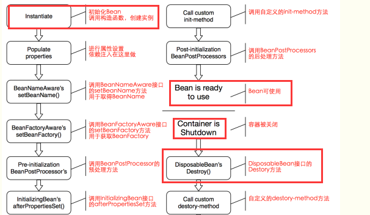

Spring是一个轻量级的框架，主要有IOC（控制反转 ）和AOP（面向切面）两大核心内容。简化了开发，降低了开发的复杂度，同时可以整合其他的优秀的第三方框架或者类库，目前在大多数公司中都比较流行。
控制反转IOC：将对象的创建和管理交给Spring框架处理
依赖注入DI：在程序运行期间，动态的将值进行注入
IOC案例
步骤：
1.引入Spring所需要的jar包 :
soring-beans、spring-context、spring-core、spring-expression、speing-jcl
2.创建实体类及dao层
3.创建applicationContext.xml文件配置
1<bean id="userDao" class="cn.yunhe.dao.impl.UserDaoImpl"></bean>
x1/*UserDaoImpl userDao = new UserDaoImpl();2userDao.saveUser();3userDao.delUser();*/45//读取配置文件 BeanFactory6ApplicationContext ac = new ClassPathXmlApplicationContext("applicationContext.xml");7//获取实体类对象8IUserDao userDao = ac.getBean("userDao", UserDaoImpl.class);9userDao.saveUser();10userDao.delUser();
无参构造+setter方法
xxxxxxxxxx181 2<beans xmlns="http://www.springframework.org/schema/beans"3 xmlns:xsi="http://www.w3.org/2001/XMLSchema-instance"4 xsi:schemaLocation="http://www.springframework.org/schema/beans5 http://www.springframework.org/schema/beans/spring-beans.xsd">67 <bean id="userDao" class="cn.yunhe.dao.impl.UserDaoImpl"></bean>8 9 <!-- 10 property:属性11 name：对应bean中的属性名12 ref：引用13 通过无参构造器+setter方法进行值的注入14 -->15 <bean id="userService" class="cn.yunhe.service.impl.UserServiceImpl">16 <property name="userDao" ref="userDao"></property>17 </bean>18</beans> xxxxxxxxxx71IUserDao userDao;23public UserServiceImpl(){}45public void setUserDao(IUserDao userDao){6 this.userDao = userDao;7}有参构造
xxxxxxxxxx211<!-- 有参构造进行值的注入2 constructor-arg:构造器的参数值3 -->4<bean id="userService2" class="cn.yunhe.service.impl.UserServiceImpl">5 <constructor-arg name="userDao" ref="userDao"></constructor-arg>6</bean>78<!-- 9 有参构造10 constructor-arg：构造参数设置11 name：对应构造器中的参数名12 value：对应参数的值13 index：对应构造器中参数的位置(下标)14 type：指定参数的类型15 -->16<bean id="user" class="cn.yunhe.beans.User">17 <!-- <constructor-arg name="age" value="12"></constructor-arg>18 <constructor-arg name="name" value="小张"></constructor-arg> -->19 <constructor-arg index="0" value="13" ></constructor-arg>20 <constructor-arg index="1" value="小代" ></constructor-arg>21</bean>静态工厂
xxxxxxxxxx51<!-- 2 静态工厂3 factory-method：要指定的静态方法4 -->5<bean id="user2" class="cn.yunhe.factory.StaticFactory" factory-method="getUser"></bean> xxxxxxxxxx61public class StaticFactory {23 public static User getUser(){4 return new User(15,"哈哈");5 }6}实例化工厂
xxxxxxxxxx61<!-- 2 动态注入3 -->4 <bean id="dynamicFactory" class="cn.yunhe.factory.DynamicFactory"></bean>5 <!-- factory-bean:指定通过哪个工厂进行对象的创建 -->6 <bean id="user3" factory-bean="dynamicFactory" factory-method="getUser"></bean> xxxxxxxxxx71public class DynamicFactory {23 public User getUser(){4 return new User(16,"嘿嘿");5 }6}7
xxxxxxxxxx101实体类2//初始化3public void init(){4 System.out.println("--初始化--");5}67//销毁8public void destory(){9 System.out.println("--销毁--");10} xxxxxxxxxx51<bean id="user" class="cn.yunhe.beans.User" 2 init-method="init" destroy-method="destory">3 <property name="age" value="12"></property>4 <property name="name" value="小张"></property>5</bean> xxxxxxxxxx121//测试2public void queryUsersTest() {4 //1、读取Spring配置文件5 ClassPathXmlApplicationContext ac = 6 new ClassPathXmlApplicationContext("applicationContext.xml");7 //2、通过Spring容器创建实例对象8 User user = ac.getBean("user", User.class);9 System.out.println(user);10 //3、手动关闭容器11 ac.close();12}注意：destroy-method方法只有在scope为singleton的时候才能生效
scope属性定义对象的作用域 默认作用域(singleton单例)
singleton 单例
prototype 多例
request 请求范围内
global 全局作用域
xxxxxxxxxx21<!--scope定义bean的作用域-->2<bean id="userDao" class="cn.yunhe.dao.impl.UserDaoImpl" scope="prototype"></bean> xxxxxxxxxx71//两者的地址一样则代表是同一个对象2ClassPathXmlApplicationContext ac = 3 new ClassPathXmlApplicationContext("applicationContext2.xml");4IUserDao userDao = ac.getBean("userDao",UserDaoImpl.class);5System.out.println(userDao);6IUserDao userDao2 = ac.getBean("userDao",UserDaoImpl.class);7System.out.println(userDao2);
xml装配
手动装配
xxxxxxxxxx11以无参构造+setter进行演示
xxxxxxxxxx361<bean id="date" class="java.util.Date"></bean>2 <bean id="custom" class="cn.yunhe.beans.Custom">3 <property name="num" value="11"></property>4 <property name="name" value="小小"></property>5 <property name="date" ref="date"></property>6 <property name="arr">7 <array>8 <value>关羽</value>9 <value>刘备</value>10 <value>张飞</value>11 </array>12 </property>13 <property name="list">14 <list>15 <value>关羽</value>16 <value>刘备</value>17 <value>张飞</value>18 </list>19 </property>20 <property name="map">21 <map>22 <entry>23 <key><value>name</value></key>24 <value>项羽</value>25 </entry>26 <entry>27 <key><value>坐骑</value></key>28 <value>乌骓</value>29 </entry>30 <entry>31 <key><value>user</value></key>32 <bean id="user" class="cn.yunhe.beans.User"></bean>33 </entry>34 </map>35 </property>36 </bean>自动装配
autowire 自动装配
xxxxxxxxxx11byType:按照类型装配，查找上下文中是否有指定类型的对象，有就注入成功，没有就失败，如果有查找多 多个也会注入失败
xxxxxxxxxx31<bean id="userDao" class="cn.yunhe.dao.impl.UserDaoImpl"></bean>2<bean id="userService" class="cn.yunhe.service.impl.UserServiceImpl" autowire="byType">3</bean> xxxxxxxxxx131 //byType类型时通过无参构造+setter方式构建对象2 3 IUserDao userDao ;4 5 public UserServiceImpl(){}6 7 public UserServiceImpl(IUserDao userDao){8 this.userDao = userDao;9 }10 11 public void setUserDao(IUserDao userDao){12 this.userDao = userDao;13 } byName:按照名称装配，根据名称在上下文中进行查找，找到就注入，找不到就失败
xxxxxxxxxx41<!--修改dao的id值，测试byName的使用-->2<bean id="userDao" class="cn.yunhe.dao.impl.UserDaoImpl"></bean>3<bean id="userService" class="cn.yunhe.service.impl.UserServiceImpl" autowire="byName">4</bean> constructor:按照构造器参数类型装配,，和byType一样，根据构造器的参数类型匹配
注解方式装配
@Component 通用注解 类似
xxxxxxxxxx111@Component("") 类似 <bean id="" class="">23@Controller/@Controller("") 表现层45@Service/@Service("") 业务层67@Repository/@Repository("") 数据层89@Scope("") 定义生命周期1011自动注入：
xxxxxxxxxx41 1. //按类型注入2 2. 按名称注入3 1. +("")4 2. (name="") //使用该注解需要spring-aop.jar的支持测试步骤：
1、给dao的实现类和service的实现类中分别加上@Component注解
xxxxxxxxxx221("userDao")2public class UserDaoImpl implements IUserDao {3 4 5 public List<User> queryUsers() {6 System.out.println("查询用户列表");7 return null;8 }9}1011("userService")12public class UserServiceImpl implements IUserService {13 14 15 IUserDao userDao;16 17 18 public List<User> queryUsers() {19 return userDao.queryUsers();20 }2122}2、在配置文件中配置扫描，指定要扫描的包
xxxxxxxxxx121 2<beans xmlns="http://www.springframework.org/schema/beans"3 xmlns:xsi="http://www.w3.org/2001/XMLSchema-instance"4 xmlns:context="http://www.springframework.org/schema/context"5 xsi:schemaLocation="http://www.springframework.org/schema/beans6 http://www.springframework.org/schema/beans/spring-beans.xsd7 http://www.springframework.org/schema/context8 http://www.springframework.org/schema/context/spring-context.xsd">9 10 <!-- 配置注解扫描 base-package：指定要扫描的包-->11 <context:component-scan base-package="cn.yunhe.dao.impl,cn.yunhe.service.impl"></context:component-scan> 12</beans> 当前所用环境：spring5.x 需要junit的版本在4.12及以上
需要junit的jar包
需要Spring中的test包
xxxxxxxxxx231(SpringJUnit4ClassRunner.class)2(locations="classpath:applicationContext.xml")3public class SpringJunitTest {45 public static void main(String[] args) {6 /*//读取容器7 ApplicationContext ac = 8 new ClassPathXmlApplicationContext("applicationContext.xml");9 //通过getBean来构建对象10 IUserService userSerivce = ac.getBean(IUserService.class);11 userSerivce.delUser();12 userSerivce.saveUser();*/13 }14 15 16 IUserService userSerivce;17 18 19 public void test(){20 userSerivce.delUser();21 userSerivce.saveUser();22 }23}概念：代理即在访问真正的对象之前和之后所做的业务处理的对象
以事务的操作为例讲解：
代理对象和真实的对象需要实现同一个接口
xxxxxxxxxx531目标对象类2public class UserDaoImpl implements IUserDao {34 5 public int saveUser() {6 //System.out.println("--开启事务--");7 System.out.println("--添加用户--");8 //System.out.println("--关闭事务--");9 return 0;10 }1112 13 public int delUser() {14 //System.out.println("--开启事务--");15 System.out.println("--删除用户--");16 //System.out.println("--关闭事务--");17 return 0;18 }19}20代理对象类21 public class ProxyUserDaoImpl implements IUserDao{2223 //UserDaoImpl userDao = new UserDaoImpl();2425 IUserDao userDao;2627 public ProxyUserDaoImpl(IUserDao userDao){28 this.userDao = userDao;29 }3031 32 public int saveUser() {33 System.out.println("--开启事务--");34 userDao.saveUser();35 System.out.println("--关闭事务--");36 return 0;37 }3839 40 public int delUser() {41 System.out.println("--开启事务--");42 userDao.delUser();43 System.out.println("--关闭事务--");44 return 0;45 }46 }47测试类48public void test(){50 IUserDao userDao = new ProxyUserDaoImpl(new UserDaoImpl2());51 userDao.delUser();52 userDao.saveUser();53} 在程序运行期间，动态的创建代理对象
xxxxxxxxxx321//目标对象类与上述相同2//测试方法3public void test2(){5 //真实对象6 IUserDao userDao = new UserDaoImpl();7 //创建代理对象8 //ClassLoader 加载真实对象的class文件9 //Class<?>[] 真实对象所实现的所有接口10 IUserDao proxy = (IUserDao) Proxy.newProxyInstance(11 userDao.getClass().getClassLoader(), 12 userDao.getClass().getInterfaces(), 13 //代理对象要做的事情14 new InvocationHandler(){15 //proxy 代理对象16 //method 目标对象中的方法的描述方法17 //args 目标对象中方法的参数18 19 public Object invoke(Object proxy, Method method,20 Object[] args) throws Throwable {21 System.out.println("开启事务");22 //每个要代理的方法都会执行23 //通过反射机制，找到要执行的dao里面的方法24 Object obj = method.invoke(userDao, args);25 System.out.println("关闭事务");26 return obj;27 }28 }29 );30 proxy.delUser();31 proxy.saveUser();32}问题：必须要有接口
导入jar，只需要提供要代理的类即可
jar：asm.jar cglib.jar或者使用Spring-core.jar（其中包含的有）
xxxxxxxxxx421目标对象类2public class UserDaoImpl2 {34 public int saveUser() {5 //System.out.println("--开启事务--");6 System.out.println("--添加用户2--");7 //System.out.println("--关闭事务--");8 return 0;9 }1011 public int delUser() {12 //System.out.println("--开启事务--");13 System.out.println("--删除用户2--");14 //System.out.println("--关闭事务--");15 return 0;16 }17}1819测试类20public void tests3(){22 //创建目标对象23 UserDaoImpl2 userDaoImpl2 = new UserDaoImpl2();24 //创建Enhancer设置相关属性及创建代理对象--cglib25 Enhancer enhancer = new Enhancer();26 //指定要代理的对象27 enhancer.setSuperclass(UserDaoImpl2.class);28 //设置回调函数处理代理方法29 enhancer.setCallback(new MethodInterceptor(){30 public Object intercept(Object proxy,Method method,Object[] args,MethodProxy methodProxy){31 System.out.println("开启事务");32 Object obj = method.invoke(userDaoImpl2,args);33 //methodProxy.invokeSuper(proxy,args);34 System.out.println("关闭事务");35 return obj;36 }37 });38 //创建代理对象39 UserDaoImpl2 proxy = (UserDaoImpl2)enhancer.create();40 proxy.delUser();41 proxy.saveUser();42}
1、面向切面编程：采用横向抽取的方式，在程序运行的过程中，动态的向目标对象中织入要增强的代码。底层采用动态代理方式(JDK代理和cglib代理)
2、应用场景
事务管理、日志、性能监控等...
3、术语解释
target：目标对象
advice：通知(增强代码)
joinpoint：连接点，可能要添加增强代码的方法
pointcut：切入点，要添加增强代码的方法
weaving：织入，将增强代码添加到切入点的过程
aspect：切面，切入点和增强代码之间形成的虚拟的面
4、案例--给删除方法添加事务管理，使用aspectj框架而非Spring aop
步骤：
a)创建项目，导入jar。
4+1 core context bean spel jcl
spring-aop.jar 基于aspectj实现的
spring-aspects.jar aspectj的规则
aspectjweaver.jar 织入的技术
aopalliance.jar 设置通知的规则
b)创建目标类和通知类
xxxxxxxxxx441public class UserServiceImpl implements UserService{2 3 public int saveUser() {4 userDao.saveUser();5 return 0;6 }78 9 public int delUser() {10 userDao.delUser();11 return 0;12 }13}1415public class MyAdvice{16 //JoinPoint用于获取目标对象中的相关信息17 public void before(JoinPoint joinPoint){18 System.out.println("添加事务");19 }20 21 public void after(){22 System.out.println("关闭事务");23 }24 25 public void afterReturning(){26 System.out.println("后置通知");27 }28 29 public void afterThrowing(){30 System.out.println("异常通知");31 }32 //环绕通知，必须手动调用目标对象的方法33 public void around(ProceedingJoinPoint joinPoint){34 try{35 System.out.println("前置");36 joinPoint.proceed();37 System.out.println("返回");38 }catch(){39 System.out.println("异常");40 }finally{41 System.out.println("后置通知");42 }43 }44} xxxxxxxxxx281<!--创建目标对象-->2<bean id="userService" class=""></bean>3<!--创建增强类对象-->4<bean id="myAdvice" class=""></bean>5<!--将通知织入到目标对象上6 aop:config属性7 proxy-target-class="true" true代表强制使用cglib8-->9<aop:config>10 <!--切入点：配置要向什么地方添加增强代码11 expression:execution(返回值类型 包名 类名 方法名(参数,...))12 * service..*(..)13 -->14 <aop:pointcut expression="execution(* service..*(..))" id="myPointcut"/>15 <!--切面：添加什么，如何添加-->16 <aop:aspect ref="myAdvice">17 <!--前置通知-->18 <!--<aop:before method="before" pointcut-ref="myPointcut"/>-->19 <!--后置通知-->20 <!--<aop:after method="after" pointcut-ref="myPointcut"/>-->21 <!--返回通知-->22 <!--<aop:after-returning method="afterReturning" pointcut-ref="myPointcut"/>-->23 <!--异常通知-->24 <!--<aop:after-throwing method="afterThrowing" pointcut-ref="myPointcut"/>-->25 <!--环绕通知-->26 <aop:around method="around" pointcut-ref="myPointcut"/>27 </aop:aspect>28</aop:config> xxxxxxxxxx131//测试类2(SpringJUnit4ClassRunner.class)3(locations="classpath:applicationContext.xml")4public class AopTest{5 6 UserService userService;7 8 9 public void test(){10 userService.saveUser();11 userService.delUser();12 }13}注解实现AOP
xxxxxxxxxx41<!--配置自动代理切面-->2<aop:aspectj-autoproxy/>3<!--配置扫描-->4<context:component-scan base-package=""></context:component-scan>
xxxxxxxxxx161("myAdvice")2public class MyAdvice{4 /**@Before("execution(* service..*(..))")5 public void before(){6 System.out.println("添加事务");7 }*/8 //多处使用，可抽离为方法通过注解使用9 ("execution(* service..*(..))")10 public void pointcut(){}11 //注意：此处的aspectweaver.jar版本要在1.8以上12 ("pointcut()")13 public void before(){14 System.out.println("添加事务");15 }16}
概述：JdbcTemplate是Spring提供的对象，对原始的jdbc api进行的简单封装，存在与spring-jdbc.jar中
步骤：
4+1jar包
spring-jdbc.jar+spring-tx.jar spring对jdbc操作时需要事务的支持
创建JdbcTemplate对象，设置数据源，执行查询操作 (new BeanProperty...)
在xml中配置数据源
xxxxxxxxxx71<bean id="dataSource" class="....DriverManagerDataSource">2 <property name="" value=""></property>3 <!--///代表简写-->4 <property name="url" value="jdbc:mysql:///shop"></property>5 <property name="" value=""></property>6 <property name="" value=""></property>7</bean> xxxxxxxxxx121//需要使用JdbcDaoSupport中的setDataSource进行数据源的注入2public class UserDaoImpl extends JdbcDaoSupport implements UserDao{3 //Autowired在方法上的使用，给参数进行注入4 5 public void setDataSource(DataSource dataSource){6 super.setDataSource(dataSource);7 }8 9 public List<User> queryUsers(){10 return getJdbcTemplate().query("sql",new BeanPropertyRowMapper(User.class));11 }12}步骤：使用servlet模拟处理登录请求
创建web项目导入4+1
导入spring-web.jar
创建jsp发送登录请求，使用servlet接收请求
创建service用于处理业务逻辑，在servlet中调用service对象
思考：servlet容器的创建和Spring容器的创建，该如何加载spring的配置文件
需要在web.xml中配置监听器ContextLoaderListener
在servlet中使用WebApplicationContext对象获取spring容器
xxxxxxxxxx131("/user")2public class UserServlet{3 4 public void service(.....){5 String name = request.getParameter("username");6 //获取Spring容器7 WebApplicationContext wac = 8 (WebApplicationContext)request.getServletContext()9 .getAttribute(WebApplicationContext.ROOT_WEB_APP...);10 UserService service = wac.getBean("userService",UserService.class);11 service.show(name);12 }13}执行后报错--在WEB-INF下找不到对应的配置文件，需要修改其默认的查找路径
xxxxxxxxxx111<!--默认加载路径为/WEB-INF/applicationContext.xml2 context-param:全局配置参数，指定加载路径3-->4<context-param>5 <param-name>contextConfigLocation</param-name>6 <param-value>classpath:applicationContext.xml</param-value>7</context-param>8<!-- 配置监听加载Spring容器 -->9<listener>10 <listener-class>org.springframework.web.context.ContextLoaderListener</listener-class>11</listener>流程： 1、导入相关的jar 4+1 dao aop mybatis mybatis-spring 驱动包 2、配置Spring的配置文件和Mybatis的配置文件 3、配置数据源 4、配置SqlSessionFactoryBean对象，注入数据源+加载Mybatis的配置文件 5、配置映射文件所在的地址 6、配置事务
xxxxxxxxxx431<!--1、创建数据源-->2<context:property-placeholder location="classpath:jdbc.properties"/>3<bean id="dataSource" class="...DriverManagerDataSource">4 <property name="driverClassName" value="${}"></property>5 <property name="url" value="${}"></property>6 <property name="username" value="${}"></property>7 <property name="password" value="${}"></property>8</bean>9<!--2、创建SqlSessionFactory,注入数据源，加载Mybatis的配置文件-->10<bean id="ssf" class="...SqlSessionFactoryBean">11 <!--加载mybatis的配置文件-->12 <property name="configLocation" value="classpath:sqlMapConfig.xml"></property>13 <!--加载数据源-->14 <property name="dataSource" ref="dataSource"></property>15</bean>16<!--3、创建mapper代理对象17 MapperFactoryBean:给单一的mapper接口创建代理对象18 MapperScannerConfigurer批量创建代理对象19-->20<bean class="...MapperScannerConfigurer">21 <!--配置xml扫描包-->22 <property name="basePackage" value=""></property>23 <!--配置SqlSessionFactoryBean-->24 <property name="sqlSessionFactoryBeanName" value="ssf"></property>25</bean>26<!--4、声明式事务-->27<bean id="txManager" class="...DataSourceTransactionManager">28 <property name="dataSource" ref="dataSource"></property>29</bean>30<!--事务管理策略-->31<tx:advice id="txAdvice" transaction-manager="txManager">32 <tx:attributes>33 <tx:method name="query*" read-only="true"/>34 <tx:method name="insert*" propagation="true"/>35 <tx:method name="update*" propagation="true"/>36 <tx:method name="delete*" propagation="true"/>37 </tx:attributes>38</tx:advice>39<!--织入事务-->40<aop:config>41 <aop:pointcut expression="execution(* service..*(..))" id="myPointcut"/>42 <aop:advisor advice-ref="txAdvice" pointcut-ref="myPointcut"/>43</aop:config>
引入：使用Java文件通过注解的方式替代xml的配置
思考：在xml文件中所做的事有：扫描、创建对象、配置数据源等
xxxxxxxxxx431/**2需要声明该类是一个配置类，作用和config.xml一样3Spring提供的新注解：4@Configuration5 作用：指定当前类是一个配置类6 注意：如果该类作为了Annotation...的参数时，该注解可省略不写7@ComponentScan(@ComponentScans是数组的形式)8 作用：用于指定Spring在创建容器时需要扫描的包9 属性：--(点击查看源码说明其中的属性)10 value:和basePackages的作用一样，用于指定创建容器时需要扫描的包11 该注解的使用相当于在xml中：12 <context:component-scan base-package=""></context:component-scan>13@Bean14 作用：用于把当前方法的返回值作为bean对象存入到spring的ioc容器中15 属性：16 name:用于指定bean的id。不写则默认为当前方法的名称17 注意：当方法中带有参数时，会去spring的容器中进行查找,查找的方式和Autowired一样，未找到则报错18*/19//@ComponentScan(basePackages={})21//@ComponentScan(basePackages = "cn.yunhe.service")22("cn.yunhe.service")23public class SpringConfig{24 25 (name="runner")26 public QueryRunner createQueryRunner(DataSource dataSource){27 return new QueryRunner(dataSource);28 }29 30 (name="dataSource")31 public DataSource createDateSource(){32 try{33 ComboPooledDataSource ds = new ComboPooledDataSource();34 ds.setDriverClass("");35 ds.setJdbcUrl("");36 ds.setUser("");37 ds.setPassword("");38 return ds;39 }catch(Exception e){40 throw new RunTimeException();41 }42 }43}测试上述代码时发现，之前是通过ClassPathXml...来读取xml文件的，现在变成了java文件，该如何去读取对应的java文件进行容器创建呢？
答：在ApplicationContext的子类中除了ClassPath..之外还有一个Annotation...类用于加载被@Configuration标注的java文件，其它的不变。
注意：通过@Bean获取到的对象为单例模式，可通过在@Bean的下方添加@Scope改变管理方式---需演示
xxxxxxxxxx91public class UserServiceTest{2 3 public void queryAll(){4 //1.获取容器对象5 ApplicationContext ac = new AnnotationConfigApplicationContext(SpringConfig.class);6 //2.获取对象7 //3.执行查询方法8 }9}思考：当配置类出现多个，例如：一个主配置类(SpringConfig)，多个子配置类(jdbcConfig或者事务配置类等)，该如何进行关联？
xxxxxxxxxx51({"cn.yunhe.service","cn.yunhe.config"})2(JdbcConfig.class)//此时，JdbcConfig.class中不再需要@Configuration注解3public class SpringConfig{4 5}思考：数据库的配置类中关于数据库相关的数据又出现了硬编码问题，该如何处理？
方案：和之前一样，创建properties文件，进行引入 (需要创建properties文件)
@PropertySource("classpath:jdbcConfig.properties")进行文件的引入
xxxxxxxxxx301//1.在jdbcConfig文件中指定对应的属性2public class JdbcConfig{3 ("${jdbc.diver}")4 private String driver;5 ("${jdbc.url}")6 private String url;7 ("${jdbc.username}")8 private String username;9 ("${jdbc.password}")10 private String password;11 12 (name="runner")13 public QueryRunner createQueryRunner(DataSource dataSource){14 return new QueryRunner(dataSource);15 }16 17 (name="dataSource")18 public DataSource createDateSource(){19 try{20 ComboPooledDataSource ds = new ComboPooledDataSource();21 ds.setDriverClass(driver);22 ds.setJdbcUrl(url);23 ds.setUser(username);24 ds.setPassword(password);25 return ds;26 }catch(Exception e){27 throw new RunTimeException();28 }29 }30} xxxxxxxxxx41//2.在主配置类中指定查找的路径2("JdbcConfig.class")3("classpath:jdbcConfig.properties")4public class SpringConfig{}思考：纯注解的方式也并没有简化开发，那么和xml配置的方式相比该如何选择呢？
方案：
1.遵循企业要求
2.结合使用，比如：@Service和@Autowired的使用结合xml配置文件